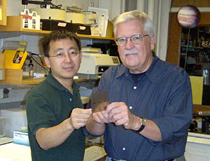

News Archives : 2005 : CCT is Required for the Biogenesis of Functional Plk1
by Raymond Erikson and Xiaoqi Liu
May 31, 2005
In a search for Plk1-interacting partners using a yeast two-hybrid system, we identified a component of 900 kD chaperonin containing TCP1 complex (CCT). In this communication, we further explored the interaction by providing evidence to show that Plk1 associates with CCT both in vitro and in vivo. Silencing of CCT by use of RNA interference (RNAi) in mammalian cells inhibits cell proliferation, decreases cell viability, causes cell cycle arrest with 4N DNA content, and leads to apoptosis. Depletion of CCT in well-synchronized HeLa cells causes cell cycle arrest at G2, as demonstrated by a low mitotic index and Cdc2 activity. Complete depletion of Plk1 in well-synchronized cells also leads to G2 block, suggesting that misfolded Plk1 might be responsible for the failure of CCT-depleted cells to enter mitosis. Moreover, partial depletion of CCT or Plk1 leads to mitotic arrest. In the manuscript, several different protocols were developed to deplete Plk1 and CCT in well-synchronized cultured cells.
The current work resolves to a great extent the discrepancy about the role of polo kinase as a trigger kinase in mitotic entry by demonstrating that, in mammalian cells as in Xenopus, a substantial silencing of Plk1 that causes a phenotype in one stage of mitosis may not be sufficient to block Plk1 action at another stage. Finally, the CCT-depleted cells reenter the cell cycle upon reintroduction of the purified constitutively active form of Plk1, further supporting the conclusion that Plk1 is a CCT substrate.
Read paper in Molecular and Cellular Biology
Xiaoqi Liu Receives Howard Temin Award
by Jim Henle  Xiaoqui Liu and Raymond Erikson Xiaoqi Liu of the Raymond Erikson lab in MCB has been awarded the prestigious Howard Temin Award from the National Cancer Institute. According to NCI, the Temin Award honors "outstanding junior scientists in basic research who are committed to developing research programs highly relevant to the understanding of human biology and human disease as it relates to the etiology, pathogenesis, prevention, diagnosis, and treatment of human cancer." The award is named for Nobel Prize winner Howard Temin, who made notable contributions to cancer research through his investigations of reverse transcriptase. Dr. Liu’s research focuses on the role of the polo-like kinase, Plk1, and its role in the cell cycle. The latest findings have just been published in the journal Molecular and Cellular Biology (Xiaoqi Liu, Chin-Yo Lin, Ming Lei, Shi Yan, Tianhua Zhou, and Raymond L. Erikson "CCT Chaperonin Complex Is Required for the Biogenesis of Functional Plk1" Mol. Cell. Biol. 2005 25: 4993-5010. For a review of earlier work, see "Polo-like kinase 1 in the life and death of cancer cells," Cell Cycle, Sept.-Oct., 2003, 2:424-5). The Temin Award is targeted for young scientists, and is specificially designed to encourage and promote the transition from mentored postdoctoral research to independent investigator status. It is granted to only a select few researchers each year. According to Professor Erikson, there is "severe competition" for the award and that probably no more than three or four were awarded this year. Professor Erikson notes that it is a fitting recognition for Dr. Liu, who is "a very high caliber young investigator who has been very productive in my lab." Dr. Liu was earlier the recipient of a Harvard biosciences award, the Merck Genome-Related Research Award for post-doctoral fellows, in 2004. According to Professor Erikson, the most notable feature of Dr. Liu’s work using RNAi techniques with regard to cancer research is that, when depleted of Plk1, cancer cells undergo apoptosis. In further research, moreover, there are promising indications that normal cells may behave differently under conditions of depleted Plk1, thus opening new avenues of research. Dr. Liu’s Howard Temin Award is an early milestone in what promises to be a fruitful research program. It is also a deserved boost to establishing his own career as a principal investigator. |